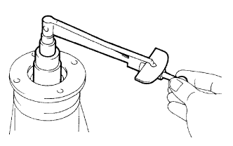
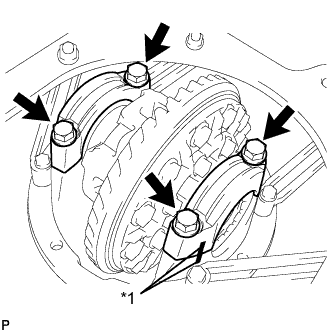
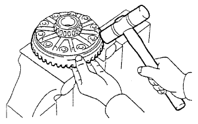

REAR DIFFERENTIAL CARRIER ASSEMBLY > DISASSEMBLY |
| 1. FIX REAR DIFFERENTIAL CARRIER ASSEMBLY IN PLACE |
| 2. INSPECT RUNOUT OF REAR DRIVE PINION COMPANION FLANGE SUB-ASSEMBLY REAR |
Using a dial indicator, measure the runout of the companion flange vertically and laterally.
| Item | Specified Condition |
| Vertical runout | 0.14 mm (0.00551 in.) |
| Lateral runout | 0.14 mm (0.00551 in.) |
| *a | Vertical Runout |
| *b | Lateral Runout |
| 3. INSPECT RUNOUT OF DIFFERENTIAL RING GEAR |
 |
Using a dial indicator, measure the runout of the ring gear.
| 4. INSPECT DIFFERENTIAL RING GEAR BACKLASH |
 |
Using a dial indicator, measure the backlash of the ring gear.
| 5. INSPECT DIFFERENTIAL DRIVE PINION PRELOAD |
|  |
Using a torque wrench, measure the preload of the backlash between the drive pinion and ring gear.
| 6. INSPECT TOTAL PRELOAD |
Using a torque wrench, measure the preload with the teeth of the drive pinion and ring gear in contact.
| 7. REMOVE REAR DRIVE PINION NUT |
Using SST and a hammer, loosen the staked part of the rear drive pinion nut.
 |
Using a 30 mm socket wrench, remove the rear drive pinion nut.
| 8. REMOVE REAR DRIVE PINION COMPANION FLANGE SUB-ASSEMBLY |
 |
Using SST, remove the rear drive pinion companion flange sub-assembly.
| *a | Hold |
| *b | Turn |
| 9. REMOVE REAR DIFFERENTIAL CARRIER OIL SEAL |
Using SST, remove the rear differential carrier oil seal from the differential carrier.
| 10. REMOVE REAR DIFFERENTIAL DRIVE PINION OIL SLINGER |
| 11. REMOVE REAR DRIVE PINION FRONT TAPERED ROLLER BEARING (INNER) |
Using SST, remove the rear drive pinion front tapered roller bearing (inner) from the drive pinion.
| 12. REMOVE REAR DRIVE PINION FRONT TAPERED ROLLER BEARING (OUTER) |
| 13. REMOVE DIFFERENTIAL CASE ASSEMBLY |
|  |
Place matchmarks on the bearing cap and differential carrier.
| *1 | Matchmark |
Remove the 4 bolts and 2 differential bearing caps.
 |
Using a screwdriver and hammer, remove the 2 plate washers.
 |
Remove the rear differential case assembly from the differential carrier.
| 14. REMOVE DIFFERENTIAL DRIVE PINION |
 |
Remove the drive pinion and bearing spacer from the differential carrier.
| 15. REMOVE REAR DRIVE PINION REAR TAPERED ROLLER BEARING |
Using SST and a press, press out the roller bearing (inner) from the drive pinion.
| 16. REMOVE REAR DRIVE PINION FRONT TAPERED ROLLER BEARING |
Using SST, remove the roller bearing (outer) from the carrier.
Using a brass bar and hammer, tap out the oil storage ring from the carrier.
| 17. REMOVE REAR DRIVE PINION REAR TAPERED ROLLER BEARING |
Using SST, tap out the rear tapered roller bearing (outer) from the carrier.
| 18. REMOVE REAR DIFFERENTIAL DRIVE PINION PLATE WASHER |
| 19. REMOVE DIFFERENTIAL RING GEAR |
Place matchmarks on the ring gear and differential case.
| *1 | Matchmark |
Remove the 12 ring gear set bolts.
|  |
Using a plastic-faced hammer, tap on the ring gear to separate it from the differential case.
| 20. INSPECT DIFFERENTIAL CASE ASSEMBLY RUNOUT |
Install the rear differential case bearing to the differential case.
Install the differential case to the differential carrier.
Install the 2 bearing caps to the differential carrier with the 4 bolts.
 |
Using a dial indicator, measure the differential case runout.
Remove the differential case.
Remove the rear differential case bearing.
| 21. REMOVE REAR DIFFERENTIAL CASE BEARING |
Using SST, remove the 2 bearings from the differential case.
| *a | Turn |
| *b | Hold |
| 22. DISASSEMBLE DIFFERENTIAL CASE |
 |
Place matchmarks on the LH and RH cases.
| *1 | Matchmark |
Remove the 8 bolts.
 |
Using a plastic-faced hammer, separate the LH and RH cases.
Remove the parts shown in the illustration from the differential case.
| *1 | Side Gear |
| *2 | Side Gear Thrust Washer |
| *3 | Spider |
| *4 | Pinion Gear |
| *5 | Pinion Gear Thrust Washer |